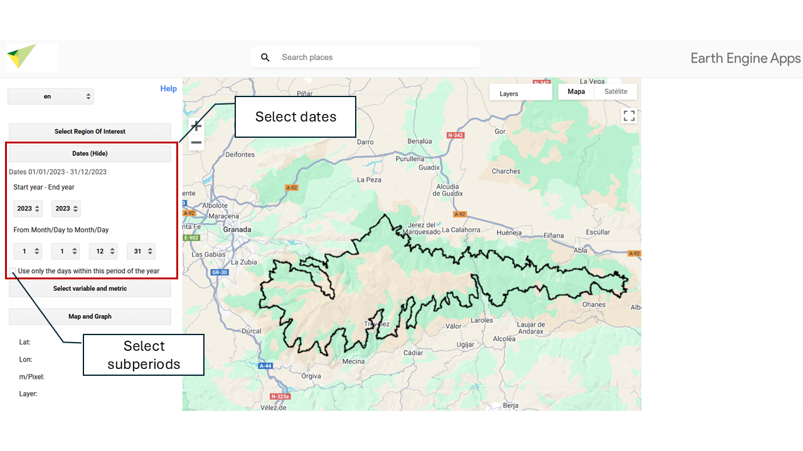

6 Selección de un intervalo de meses específico
- Selección de un intervalo específico
Al activar la casilla “Utilice sólo los días de este periodo del año” se realiza un cómputo estacional, es decir, se establece un rango temporal específico dentro del periodo de años seleccionado previamente. P.ej. todas las primaveras de 2001 a 2020 (Año inicio 2001 - Año fin 2020, Desde 21/03 - Hasta 21-09).
